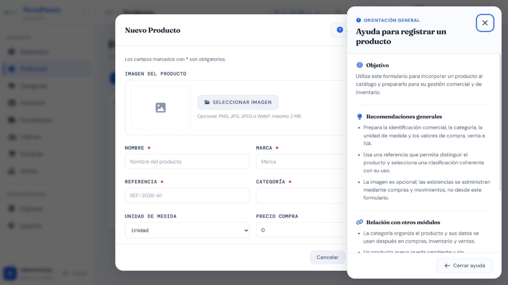
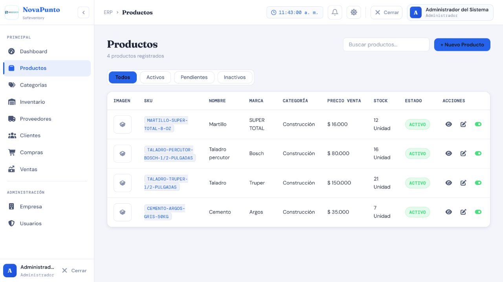

Casos de prueba — Productos
Prefijo: TC-PRD · Cobertura mínima: 6 casos · Ejecución final: 4 aprobados, 1 parcial, 1 fallido · Fecha: 8 de agosto de 2026
Alcance
Cubre creación, edición, configuración, estado, listado e imagen de Productos, además de su relación con Categorías, Compras, Inventario y Ventas. Crear, editar y cambiar estado corresponde a Administrador y Supervisor; configurar también admite Bodega. El listado exige autenticación por la configuración general.
Matriz de casos
| ID | Nombre | Tipo | Funcionalidad que verifica | Precondiciones y rol | Datos ficticios | Resultado esperado | Automatización existente | Falta automatización | Evidencia | Prioridad |
|---|---|---|---|---|---|---|---|---|---|---|
| TC-PRD-001 | Crear producto válido | Positivo / integración | Alta con categoría, unidad, referencia, precios, IVA e imagen opcional | Categoría activa; Administrador o Supervisor | Taladro 20V, marca Marca Demo, referencia TAL-20V-A, valores válidos |
HTTP 201; producto visible sin crear stock ficticio | P — backend/productos/tests.py::CategoriaSerializerTests::test_productos_comerciales_y_referencia_alfanumerica_son_validos cubre validación de texto |
Sí: endpoint, campos numéricos y ausencia de stock inicial indebido | AUTO + API + DB-R + MAN; formulario y ayuda de Producto | Alta |
| TC-PRD-002 | Rechazar referencia duplicada y datos semánticos inválidos | Negativo | Unicidad de referencia y rechazo de nombre/marca solo numéricos | Producto con referencia existente; Administrador o Supervisor | Referencia repetida; nombre 12345; marca 999 |
HTTP 400 por el campo correspondiente; no hay duplicado | P — test_producto_y_marca_solamente_numericos_se_rechazan cubre semántica; no se localizó prueba directa de referencia duplicada |
Sí: unicidad de referencia por API y persistencia | AUTO + API + DB-R | Alta |
| TC-PRD-003 | Validar precios, IVA y stock mínimo | Negativo | Límites y coherencia de campos numéricos configurables | Administrador o Supervisor; categoría existente | Precio negativo/cero fuera de regla, IVA no permitido y stock mínimo inválido | HTTP 400 con errores por campo; no modifica el producto | M — no se localizaron pruebas automatizadas de límites numéricos |
Sí: valores frontera y edición | AUTO + API | Alta |
| TC-PRD-004 | Editar y configurar sin perder relaciones | Positivo / integración | Cambios permitidos conservan categoría, historial y existencias | Producto relacionado con inventario; Administrador/Supervisor para editar, y también Bodega para configurar | Cambio de nombre, marca, precio, IVA o stock mínimo válidos | HTTP 200; relaciones e inventario se conservan; no se altera stock por editar o configurar | M — no se localizó prueba automatizada |
Sí: edición/configuración, permisos y no regresión de stock | AUTO + API + DB-R; captura de formulario compartida | Crítica |
| TC-PRD-005 | Validar imagen y ciclo de reemplazo | Negativo / integración | Acepta imagen real, rechaza archivo disfrazado y gestiona reemplazo | Administrador o Supervisor | PNG/JPEG válido, archivo no imagen con extensión falsa, archivo fuera del límite real | Solo imágenes admitidas se guardan; error controlado para archivos inválidos; reemplazo no deja estado inconsistente | P — backend/productos/tests.py::CategoriaSerializerTests::test_imagen_real_es_valida_y_archivo_disfrazado_se_rechaza |
Sí: tamaño, reemplazo, eliminación y fallo transaccional | AUTO + API; captura solo para vista previa | Alta |
| TC-PRD-006 | Listar y cambiar estado con permisos | Permisos / interfaz | Listado autenticado y activación/inactivación restringida sin usar producto inválido en operaciones | Producto existente; Administrador, Supervisor, Bodega y Vendedor | Producto ficticio activo/inactivo | Todo rol autenticado puede listar; solo Administrador/Supervisor cambia estado; el rol excluido recibe 403; el estado se refleja en la interfaz y selectores operativos | M — no se localizó prueba automatizada directa |
Sí: matriz de roles, estado y consumo por Compras/Ventas | AUTO + API + MAN; listado actual de Productos | Alta |
{kind=link}
{kind=link}
Evidencia visual mínima
- PRD-formulario-ayuda.png: formulario de Producto con ayuda contextual abierta.
- PRD-listado-actual.png: listado de escritorio con referencia, categoría, stock y estado.


Las reglas numéricas, la unicidad y la conservación de stock necesitan AUTO, API y DB-R, no una captura por variante.
Riesgos pendientes
- Las pruebas actuales validan principalmente serializers, no las rutas completas.
- Falta cobertura de precios, IVA, stock mínimo y ciclo completo de imagen.
- Editar un producto nunca debe convertirse en un ajuste implícito de inventario.
Resultado final de ejecución
| Total | Aprobados | Parciales | Fallidos |
|---|---|---|---|
| 6 | 4 | 1 | 1 |
TC-PRD-003 a TC-PRD-006 aprobaron, incluido el ciclo completo de imagen. TC-PRD-001 falló con 500 (BUG-PRD-001) y TC-PRD-002 quedó parcial porque ese defecto bloquea la revalidación de duplicidad por alta. Ver resultados trazables.